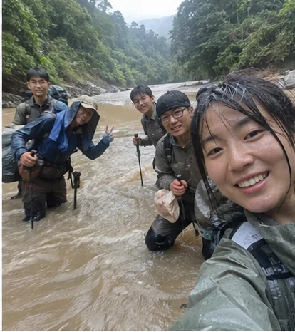
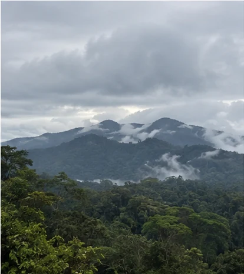
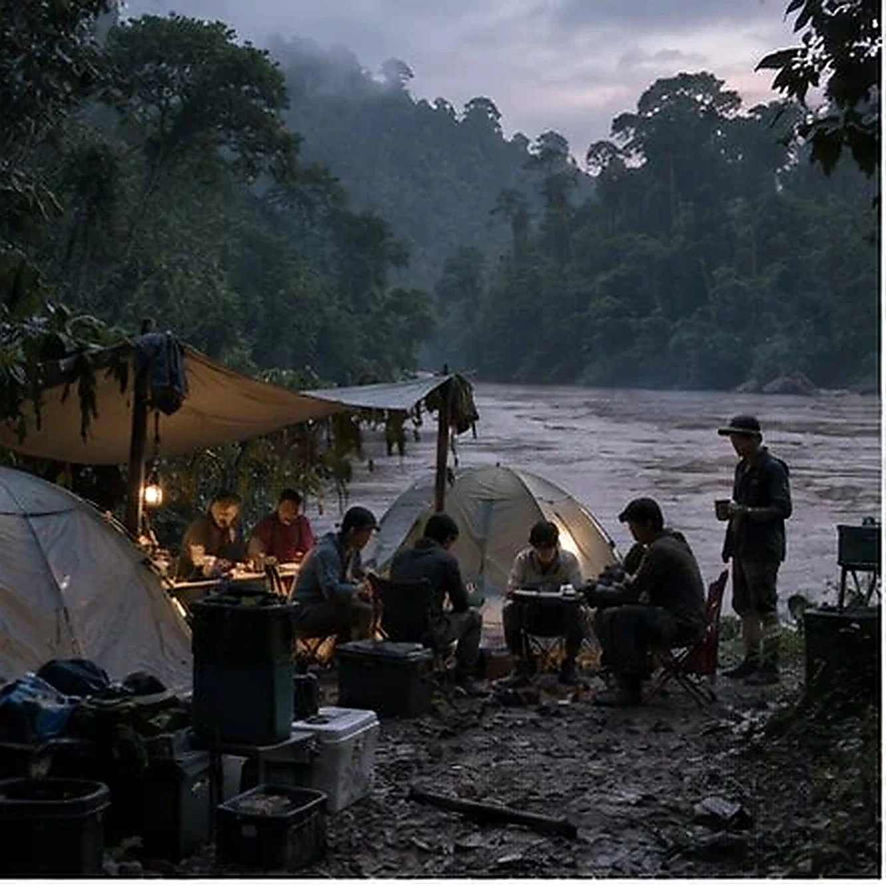
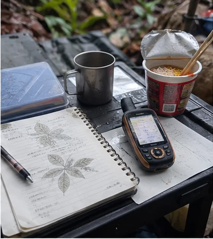
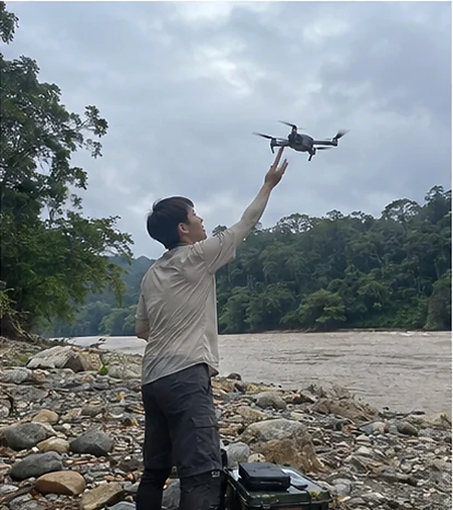
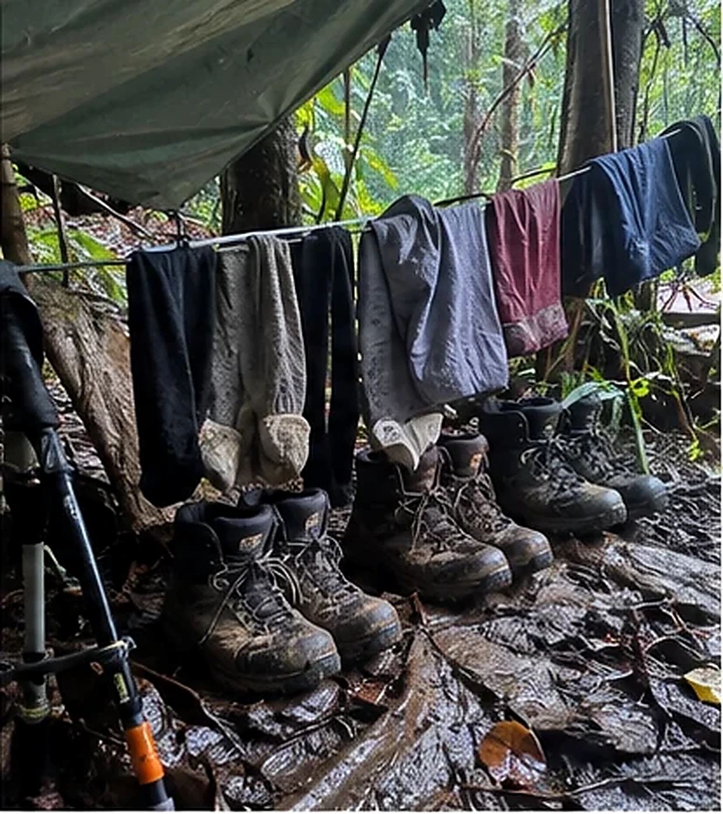

2026.08.14
南岭雨季训练
下午那场雨把新雨衣的“透气”宣传打回原形。林澈一路嫌我补水慢，陈栩一路嫌我把他的防水袋当垃圾袋，最后谁都没赢。


下午那场雨把新雨衣的“透气”宣传打回原形。林澈一路嫌我补水慢，陈栩一路嫌我把他的防水袋当垃圾袋，最后谁都没赢。

原计划看猛禽，最后花了半天帮两个第一次走长线的人把营地搬离风口。回来才发现真正忘带头灯的是我。

和老朋友又走了一遍第一次迷路的那条线。这次没迷，不过在同一个岔口争了十分钟，说明人的进步有限。

陈栩终于还了那块67i电池，外壳上多了一道我不认识的划痕。他坚持说借出去的时候就有，我决定把这件事记到公开互联网。

第一次跟许放走完整个训练周。这个人不会说“差不多”，路线、时间、撤离点都要给到具体值；很烦，但下大雨的时候你会庆幸有人这样。

回来才知道脚底磨破的不是鞋，是自己逞强。林澈说以后谁再把止痛药偷偷塞回去，她就当场把人绑上车。
